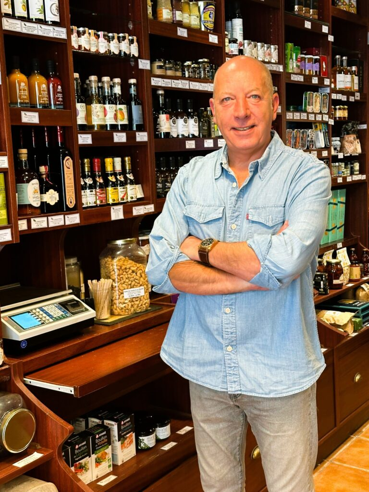

Nouveauté
Épicerie fine — Saint-Germain-en-Laye — depuis 1972
Plus de 1000 références sélectionnées avec soin, souvent issues de circuits artisanaux ou locaux et dotées d'une histoire. Un lieu où l'on prend le temps de découvrir, de goûter et d'échanger.


Nos univers
01Thés Mariage FrèresPlus de 100 thés en vrac, en boîtes ou en mousselines
 02Cafés d'exceptionTorréfiés artisanalement par Dasi Frères à Amiens
02Cafés d'exceptionTorréfiés artisanalement par Dasi Frères à Amiens
 03Huiles d'olive AOPDes cuvées françaises et italiennes d'exception
03Huiles d'olive AOPDes cuvées françaises et italiennes d'exception
 04Vinaigres balsamiques & artisanauxDe Modène à la Normandie, en passant par Jerez
04Vinaigres balsamiques & artisanauxDe Modène à la Normandie, en passant par Jerez
 05Sels, poivres & épices120 références Terre Exotique et La Plantation
05Sels, poivres & épices120 références Terre Exotique et La Plantation
 06Sauces & condimentsMoutardes, ail noir, marinades et bouillons
06Sauces & condimentsMoutardes, ail noir, marinades et bouillons
 07L'heure de l'apéroTartinables, trésors de la mer et boissons sans alcool
07L'heure de l'apéroTartinables, trésors de la mer et boissons sans alcool
 08Truffe & foie grasSpécialités truffées et foie gras de la Maison Barthouil
08Truffe & foie grasSpécialités truffées et foie gras de la Maison Barthouil
 09Douceurs sucréesConfitures, biscuits, chocolats et fruits secs
09Douceurs sucréesConfitures, biscuits, chocolats et fruits secs
En ce moment
Nouveauté

Nouveauté

Nouveauté

Nouveauté

Nouveauté

Nouveauté

Nouveauté
Nouveauté

L'épicerie fine
L’épicerie fine est un lieu où la qualité et la sélection des produits sont essentielles. Chaque référence est sélectionnée avec soin, souvent issue de circuits artisanaux ou locaux et dotée d’une histoire. On y trouve des produits uniques et originaux : huiles d’olive et vinaigres d’exception, épices du monde entier, condiments, spécialités régionales artisanales et bien entendu des thés prestigieux ou des cafés pure origine.
L’épicier est passionné et fin connaisseur, il partage ses conseils et anecdotes pour transformer chaque achat en un moment de découverte.
Avec plus de 1000 références en boutique, nous souhaitons que le Rameau d’Olivier reste un lieu où l’on prend le temps de découvrir, de goûter et d’échanger.
Ils nous font confiance
Le Rameau d'Olivier… plus qu'une épicerie… c'est le cœur gourmand de notre coffee shop, une histoire de goût partagée entre amis et qui fait pétiller nos plats.
Un lieu de découverte et de plaisir pour les gourmands et les passionnés de gastronomie.
Pour le plus grand plaisir de nos hôtes, le Rameau d'Olivier nous a aidés à choisir les 1000 petites choses qui subliment un plat basique. Notre plateau d'épices et de condiments regorge de curiosités, au point d'en faire notre signature.

Le plaisir d'offrir
Vous souhaitez offrir un cadeau gourmand à ceux que vous aimez mais qui se trouvent à distance ? Nous nous chargeons de l'envoi au tarif Colissimo en vigueur.
Pour vos clients ou collaborateurs, nous composons des sélections de cadeaux sur mesure.
La boutique
Au cœur de Saint-Germain-en-Laye, à deux pas du marché. On prend le temps de découvrir, de goûter et d'échanger.